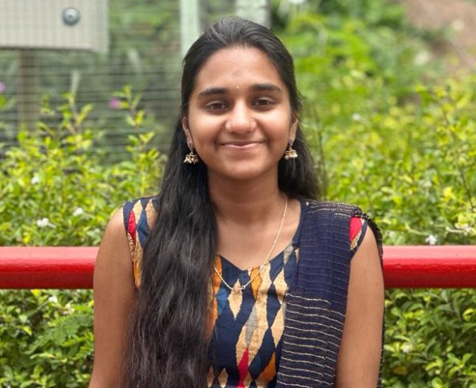

Eager to grow professionally while making meaningful contributions and advancing my skills in the IT world. |
|
|  | About Me
Hi i am Nikhitha Utada, an aspiring MERN Stack Developer who is skilled in latest web technologies and ready to take over the challenges. |
Skills
|
|
|
Contact
Email: nikhithautada2003@gmail.com LinkedIn: My Linkedin |
|
|
Project 1 : Water Classification from mobile captured images
Developed a Web Application for Water Classification Using Mobile-Captured Images.Integrated the VGG-19 deep learning model, leveraging advanced image processing techniques for accurate classification.Our system focuses on real-time identification of water bodies, aiding in environmental monitoring and resource management.The application provides instant classification results, contributing to efficient decision-making processes. View Project |
Project 2 : Face mask detection using VGG19
Created a Real-Time Face Mask Detection System Using MobileNetV2 to Enhance Pandemic Safety.Incorporated MobileNetV2 with advanced image processing for precise real-time detection.Our system is designed to promote public health by detecting face masks in different settings.Utilized OpenCV for video capture and processing, ensuring efficient and seamless detection. View Project |